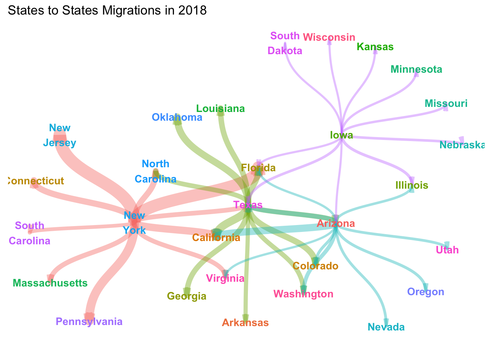

# set up python env
library(reticulate)
use_python('/Library/Frameworks/Python.framework/Versions/3.7/bin/python3')# read in data from excel file via powerful python package - "xlrd"
import xlrd
import pandas as pd
data = xlrd.open_workbook('State_to_State_Migrations_Table_2018.xls')
data = data.sheet_by_index(0)# states list
index_list = list(range(11,76))
remove_list = [16,22,28,34,40,43,44,45,46,47,53,59,65,71]
for value in remove_list:
index_list.remove(value)# states names list
state_name_list = ['Alabama', 'Alaska', 'Arizona', 'Arkansas', 'California', 'Colorado', 'Connecticut', 'Delaware', 'District of Columbia', 'Florida', 'Georgia', 'Hawaii', 'Idaho', 'Illinois', 'Indiana', 'Iowa', 'Kansas', 'Kentucky', 'Louisiana', 'Maine', 'Maryland', 'Massachusetts', 'Michigan', 'Minnesota', 'Mississippi', 'Missouri', 'Montana', 'Nebraska', 'Nevada', 'New Hampshire', 'New Jersey', 'New Mexico', 'New York', 'North Carolina', 'North Dakota', 'Ohio', 'Oklahoma', 'Oregon', 'Pennsylvania', 'Rhode Island', 'South Carolina', 'South Dakota', 'Tennessee', 'Texas', 'Utah', 'Vermont', 'Virginia', 'Washington', 'West Virginia', 'Wisconsin', 'Wyoming']
print(index_list)## [11, 12, 13, 14, 15, 17, 18, 19, 20, 21, 23, 24, 25, 26, 27, 29, 30, 31, 32, 33, 35, 36, 37, 38, 39, 41, 42, 48, 49, 50, 51, 52, 54, 55, 56, 57, 58, 60, 61, 62, 63, 64, 66, 67, 68, 69, 70, 72, 73, 74, 75]# New York (80)
# population list which contains the number of people move out from New York State to other states
ny_pop_list = []
for index in index_list:
ny_pop_list.append(data.cell_value(index, 80))
# replace NA with 0 (move from New York state to itself)
for n, i in enumerate(ny_pop_list):
if i == 'N/A':
ny_pop_list[n] = 0.0
print(ny_pop_list)## [3226.0, 380.0, 5281.0, 139.0, 34848.0, 6362.0, 27361.0, 2907.0, 4642.0, 63033.0, 10754.0, 1416.0, 2943.0, 8838.0, 1512.0, 438.0, 1656.0, 3283.0, 2106.0, 2909.0, 8372.0, 19960.0, 6478.0, 3536.0, 1319.0, 3210.0, 183.0, 770.0, 2770.0, 1276.0, 64810.0, 1099.0, 0.0, 25596.0, 2105.0, 9067.0, 1221.0, 2842.0, 43048.0, 3252.0, 12721.0, 359.0, 5312.0, 18925.0, 3413.0, 4535.0, 17983.0, 7539.0, 640.0, 1246.0, 393.0]# make a dictionary
ny_dic = dict(zip(state_name_list, ny_pop_list))
print(ny_dic)## {'Alabama': 3226.0, 'Alaska': 380.0, 'Arizona': 5281.0, 'Arkansas': 139.0, 'California': 34848.0, 'Colorado': 6362.0, 'Connecticut': 27361.0, 'Delaware': 2907.0, 'District of Columbia': 4642.0, 'Florida': 63033.0, 'Georgia': 10754.0, 'Hawaii': 1416.0, 'Idaho': 2943.0, 'Illinois': 8838.0, 'Indiana': 1512.0, 'Iowa': 438.0, 'Kansas': 1656.0, 'Kentucky': 3283.0, 'Louisiana': 2106.0, 'Maine': 2909.0, 'Maryland': 8372.0, 'Massachusetts': 19960.0, 'Michigan': 6478.0, 'Minnesota': 3536.0, 'Mississippi': 1319.0, 'Missouri': 3210.0, 'Montana': 183.0, 'Nebraska': 770.0, 'Nevada': 2770.0, 'New Hampshire': 1276.0, 'New Jersey': 64810.0, 'New Mexico': 1099.0, 'New York': 0.0, 'North Carolina': 25596.0, 'North Dakota': 2105.0, 'Ohio': 9067.0, 'Oklahoma': 1221.0, 'Oregon': 2842.0, 'Pennsylvania': 43048.0, 'Rhode Island': 3252.0, 'South Carolina': 12721.0, 'South Dakota': 359.0, 'Tennessee': 5312.0, 'Texas': 18925.0, 'Utah': 3413.0, 'Vermont': 4535.0, 'Virginia': 17983.0, 'Washington': 7539.0, 'West Virginia': 640.0, 'Wisconsin': 1246.0, 'Wyoming': 393.0}# sort the dictionary to get top 10 states which people move to
ny_sorted_dic = {k: v for k, v in sorted(ny_dic.items(), key=lambda item: item[1], reverse=True)}
# top 10 records
ny_top10_dic = {k: ny_sorted_dic[k] for k in list(ny_sorted_dic)[:10]}
print(ny_top10_dic)## {'New Jersey': 64810.0, 'Florida': 63033.0, 'Pennsylvania': 43048.0, 'California': 34848.0, 'Connecticut': 27361.0, 'North Carolina': 25596.0, 'Massachusetts': 19960.0, 'Texas': 18925.0, 'Virginia': 17983.0, 'South Carolina': 12721.0}# create the dataframe
ny_df = pd.DataFrame(list(ny_top10_dic.items()), columns = ['target','count'])
ny_df['count'] = ny_df['count'].astype(int) # change float type to int
ny_df['source'] = 'New York' # create 'source' column
ny_df = ny_df[['source', 'target', 'count']] # reorder columns
print(ny_df)## source target count
## 0 New York New Jersey 64810
## 1 New York Florida 63033
## 2 New York Pennsylvania 43048
## 3 New York California 34848
## 4 New York Connecticut 27361
## 5 New York North Carolina 25596
## 6 New York Massachusetts 19960
## 7 New York Texas 18925
## 8 New York Virginia 17983
## 9 New York South Carolina 12721# repeat the above step to generate the dataframe of Texas(104), Iowa(42) and Arizona(14)
# build a function
def dfGenerator(name, n):
pop_list = []
for index in index_list:
pop_list.append(data.cell_value(index, n))
# deal with NA
for n, i in enumerate(pop_list):
if i == 'N/A':
pop_list[n] = 0.0
dic = dict(zip(state_name_list, pop_list))
sorted_dic = {k: v for k, v in sorted(dic.items(), key=lambda item: item[1], reverse=True)}
top10_dic = {k: sorted_dic[k] for k in list(sorted_dic)[:10]}
# create df
df = pd.DataFrame(list(top10_dic.items()), columns = ['target','count'])
df['count'] = df['count'].astype(int)
df['source'] = name
df = df[['source', 'target', 'count']]
return df# df of Texas(104)
tx_df = dfGenerator(name='Texas', n=104)
print(tx_df)## source target count
## 0 Texas California 37810
## 1 Texas Oklahoma 31551
## 2 Texas Colorado 26930
## 3 Texas Florida 24197
## 4 Texas Louisiana 23588
## 5 Texas Georgia 22746
## 6 Texas Arizona 20245
## 7 Texas North Carolina 18748
## 8 Texas Washington 18425
## 9 Texas Arkansas 15531# df of Arizona(14)
az_df = dfGenerator(name='Arizona', n=14)
print(az_df)## source target count
## 0 Arizona California 33670
## 1 Arizona Texas 18628
## 2 Arizona Washington 14252
## 3 Arizona Colorado 7987
## 4 Arizona Oregon 7736
## 5 Arizona Nevada 6999
## 6 Arizona Utah 6827
## 7 Arizona Illinois 5818
## 8 Arizona Florida 4542
## 9 Arizona Virginia 4162# df of Iowa(42)
ia_df = dfGenerator(name='Iowa', n=42)
print(ia_df)## source target count
## 0 Iowa Illinois 7727
## 1 Iowa Texas 6379
## 2 Iowa Nebraska 6072
## 3 Iowa Missouri 4904
## 4 Iowa Minnesota 4626
## 5 Iowa Kansas 3704
## 6 Iowa Florida 3538
## 7 Iowa South Dakota 3275
## 8 Iowa Wisconsin 3072
## 9 Iowa Arizona 3049# concat these 4 dfs
df=pd.concat([ny_df,tx_df,az_df,ia_df],sort=False).reset_index(drop=True)
print(df)## source target count
## 0 New York New Jersey 64810
## 1 New York Florida 63033
## 2 New York Pennsylvania 43048
## 3 New York California 34848
## 4 New York Connecticut 27361
## 5 New York North Carolina 25596
## 6 New York Massachusetts 19960
## 7 New York Texas 18925
## 8 New York Virginia 17983
## 9 New York South Carolina 12721
## 10 Texas California 37810
## 11 Texas Oklahoma 31551
## 12 Texas Colorado 26930
## 13 Texas Florida 24197
## 14 Texas Louisiana 23588
## 15 Texas Georgia 22746
## 16 Texas Arizona 20245
## 17 Texas North Carolina 18748
## 18 Texas Washington 18425
## 19 Texas Arkansas 15531
## 20 Arizona California 33670
## 21 Arizona Texas 18628
## 22 Arizona Washington 14252
## 23 Arizona Colorado 7987
## 24 Arizona Oregon 7736
## 25 Arizona Nevada 6999
## 26 Arizona Utah 6827
## 27 Arizona Illinois 5818
## 28 Arizona Florida 4542
## 29 Arizona Virginia 4162
## 30 Iowa Illinois 7727
## 31 Iowa Texas 6379
## 32 Iowa Nebraska 6072
## 33 Iowa Missouri 4904
## 34 Iowa Minnesota 4626
## 35 Iowa Kansas 3704
## 36 Iowa Florida 3538
## 37 Iowa South Dakota 3275
## 38 Iowa Wisconsin 3072
## 39 Iowa Arizona 3049# transfer data to r env
flow = py$df
flow$count = ((flow$count - min(flow$count)) / (max(flow$count) - min(flow$count))) / 2 # convert for visualization
flow## source target count
## 1 New York New Jersey 0.5000000000
## 2 New York Florida 0.4856138987
## 3 New York Pennsylvania 0.3238208578
## 4 New York California 0.2574359223
## 5 New York Connecticut 0.1968232380
## 6 New York North Carolina 0.1825342854
## 7 New York Massachusetts 0.1369067858
## 8 New York Texas 0.1285277117
## 9 New York Virginia 0.1209015398
## 10 New York South Carolina 0.0783018410
## 11 Texas California 0.2814154564
## 12 Texas Oklahoma 0.2307443208
## 13 Texas Colorado 0.1933339810
## 14 Texas Florida 0.1712083677
## 15 Texas Louisiana 0.1662780719
## 16 Texas Georgia 0.1594614725
## 17 Texas Arizona 0.1392140671
## 18 Texas North Carolina 0.1270947685
## 19 Texas Washington 0.1244798497
## 20 Texas Arkansas 0.1010508250
## 21 Arizona California 0.2478991597
## 22 Arizona Texas 0.1261232817
## 23 Arizona Washington 0.0906963942
## 24 Arizona Colorado 0.0399766843
## 25 Arizona Oregon 0.0379446576
## 26 Arizona Nevada 0.0319781092
## 27 Arizona Utah 0.0305856447
## 28 Arizona Illinois 0.0224170593
## 29 Arizona Florida 0.0120869157
## 30 Arizona Virginia 0.0090105406
## 31 Iowa Illinois 0.0378717961
## 32 Iowa Texas 0.0269587604
## 33 Iowa Nebraska 0.0244733732
## 34 Iowa Missouri 0.0150175677
## 35 Iowa Minnesota 0.0127669565
## 36 Iowa Kansas 0.0053026991
## 37 Iowa Florida 0.0039588090
## 38 Iowa South Dakota 0.0018296336
## 39 Iowa Wisconsin 0.0001862016
## 40 Iowa Arizona 0.0000000000# start to plot
library(tidygraph)
graph_flow <- as_tbl_graph(flow)
graph_flow## # A tbl_graph: 29 nodes and 40 edges
## #
## # A directed simple graph with 1 component
## #
## # Node Data: 29 x 1 (active)
## name
## <chr>
## 1 New York
## 2 Texas
## 3 Arizona
## 4 Iowa
## 5 New Jersey
## 6 Florida
## # … with 23 more rows
## #
## # Edge Data: 40 x 3
## from to count
## <int> <int> <dbl>
## 1 1 5 0.5
## 2 1 6 0.486
## 3 1 7 0.324
## # … with 37 more rowslibrary(stringr)
graph_flow <- graph_flow %>%
activate(nodes) %>%
mutate(
title = str_to_title(name),
label = str_replace_all(title, " ", "\n")
)
graph_flow## # A tbl_graph: 29 nodes and 40 edges
## #
## # A directed simple graph with 1 component
## #
## # Node Data: 29 x 3 (active)
## name title label
## <chr> <chr> <chr>
## 1 New York New York "New\nYork"
## 2 Texas Texas "Texas"
## 3 Arizona Arizona "Arizona"
## 4 Iowa Iowa "Iowa"
## 5 New Jersey New Jersey "New\nJersey"
## 6 Florida Florida "Florida"
## # … with 23 more rows
## #
## # Edge Data: 40 x 3
## from to count
## <int> <int> <dbl>
## 1 1 5 0.5
## 2 1 6 0.486
## 3 1 7 0.324
## # … with 37 more rows# check states name
states <- graph_flow %>%
activate(nodes) %>%
pull(title)
states## [1] "New York" "Texas" "Arizona" "Iowa"
## [5] "New Jersey" "Florida" "Pennsylvania" "California"
## [9] "Connecticut" "North Carolina" "Massachusetts" "Virginia"
## [13] "South Carolina" "Oklahoma" "Colorado" "Louisiana"
## [17] "Georgia" "Washington" "Arkansas" "Oregon"
## [21] "Nevada" "Utah" "Illinois" "Nebraska"
## [25] "Missouri" "Minnesota" "Kansas" "South Dakota"
## [29] "Wisconsin"# visualization
library(ggplot2)## Warning: package 'ggplot2' was built under R version 3.6.2library(ggraph)## Warning: package 'ggraph' was built under R version 3.6.2# set theme
thm <- theme_minimal() +
theme(
legend.position = "none",
axis.title = element_blank(),
axis.text = element_blank(),
panel.grid = element_blank(),
panel.grid.major = element_blank(),
)
theme_set(thm)
# finishing plot
graph_flow %>%
ggraph(layout = 'kk') +
geom_edge_diagonal(aes(colour = factor(from), width = count), alpha=0.4, arrow = arrow(angle = 10, length = unit(3, "mm"), ends = "last", type = "open")) +
geom_node_text(aes(label = label, color = name, fontface='bold'), size = 3.8) +
labs(title = 'States to States Migrations in 2018')